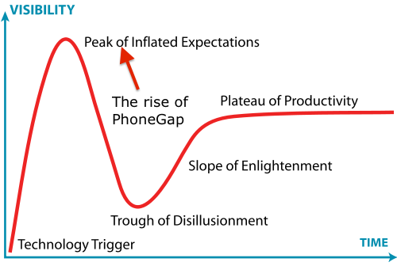
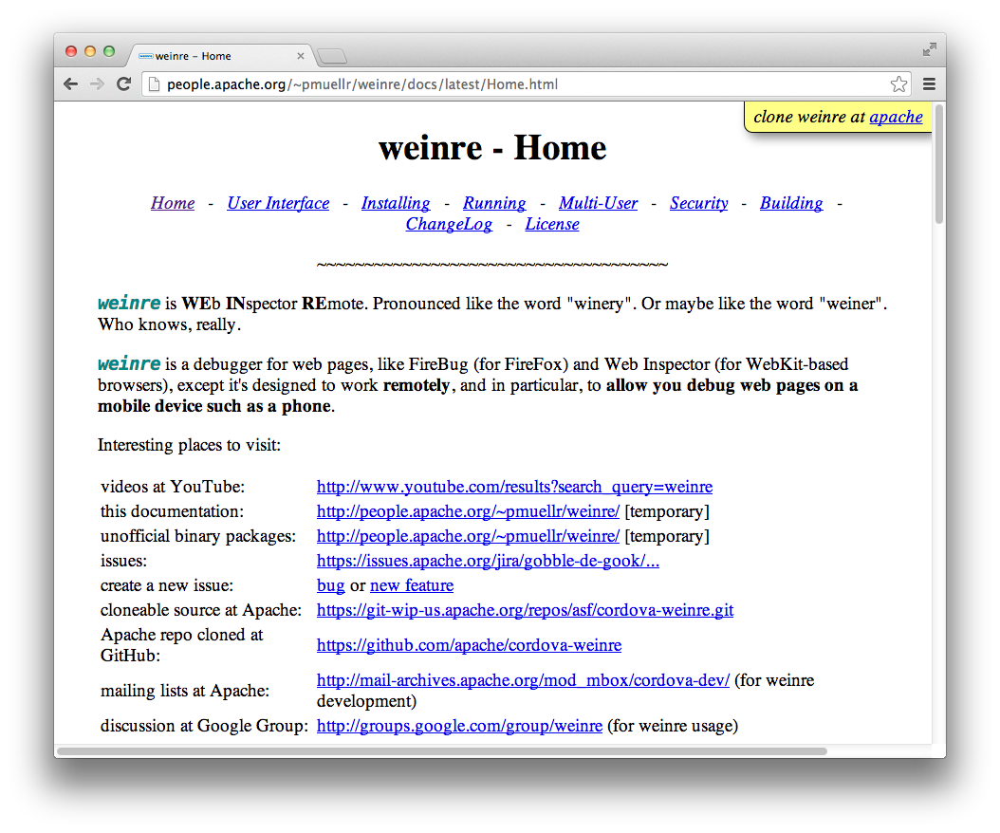
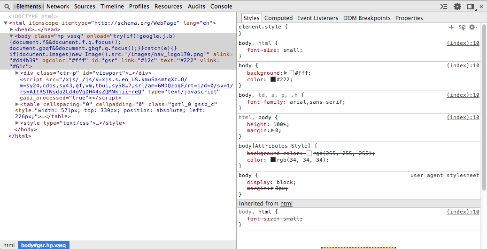
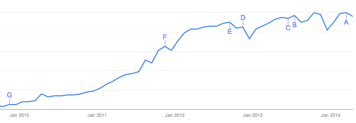

Agenda
- The past
- Now
- Tools
- Performance
- The future
"The full Safari engine is inside of iPhone. And so, you can write amazing Web 2.0 and Ajax apps that look exactly and behave exactly like apps on the iPhone."
Steve Jobs, 2007
(source)iOS 1 had no app store.
iOS 2 did. It worked out alright.
 http://www.businessinsider.com/chart-of-the-day-apple-app-store-revenues-2013-6
http://www.businessinsider.com/chart-of-the-day-apple-app-store-revenues-2013-6
In 2013, the iOS App Store revenue was higher than the GDP of 60 countries.

Others had similiar ideas


Table is from Brian Leroux's excellent Debugging Mobile talk.
Hybrid
PhoneGap
Why?
“The lack of tooling in mobile browsers makes it very difficult to dig down and find out what the real issues are. Hence tooling, or rather, lack-thereof is a key issue.”
Tobie Langel, Facebook Engineer, September 2012
"[t]ooling support — having a debugger that actually works, performance tools that tell you where the memory is running out."
Kiran Prasad, LinkedIn senior director of mobile engineering, April 2013

Ionic

Ionic

Kendo UI Mobile

Now free and open source as part of Kendo UI Core.
Tooling improvement #1:
UI frameworks
Demo
cuteness.ioTooling improvement #2:
remote debugging
Weinre
http://people.apache.org/~pmuellr/weinre/docs/latest/Home.html
iOS Remote Debugging (iOS 6+)
Settings --> Safari --> Advanced

iOS Remote Debugging (iOS 6+)

Chrome for Android Remote Debugging (Android 4.4+)
"[T]ap Build number seven times. Yup, just tap it 7 times, even if it seems crazy."
Via https://developers.google.com/chrome-developer-tools/docs/remote-debugging
about:inspect

Chrome for Android Remote Debugging (Android 4.4+)
jsHybugger

Works on Android 2.3.3+
Tooling improvement #3: Companion Apps
Demo

Tooling improvement #4: Cloud-Based Builds

LiveSync

Demo

Demo

Tooling improvement #5: Backend Services

Storing a File
var el = new Everlive( /* API key */ );
el.Files.create(
/* base 64 encoded file */,
/* success callback */,
/* error callback */
);Finding the Right BaaS
http://www.developereconomics.com/finding-right-baas/
"we’re tracking at least fifty BaaS offerings, and it seems more options appear nearly every month"
Performance

iOS Performance: The Bad News
The iOS 7 UIWebView incurs a 3.5x JavaScript performance penalty over the same app run in iOS Safari.
SunSpider
785.0ms vs. 3677.1ms — Safari is ~350% faster!
.jpg)
.jpg)
Speedometer
Safari is ~20% faster.
.jpg)
.jpg)
OMG WKWebView! OMG! OMG!
http://9to5mac.com/2014/06/03/ios-8-webkit-changes-finally-allow-all-apps-to-have-the-same-performance-as-safari/
Performance on Android
Android 4.4 switched to a new Chromium-based WebView.

Moore's Law

The performance of hybrid application will never be on par with native applications, but as speeds improve, hybrid becomes “good enough” for an increasing number of applications.
The future
Is the hybrid development growing or shrinking?
trends.google.com: PhoneGap
What is hybrid?
Cross-Compile Solutions
Mix and match?

http://mobile.smashingmagazine.com/2013/10/17/best-of-both-worlds-mixing-html5-native-code/